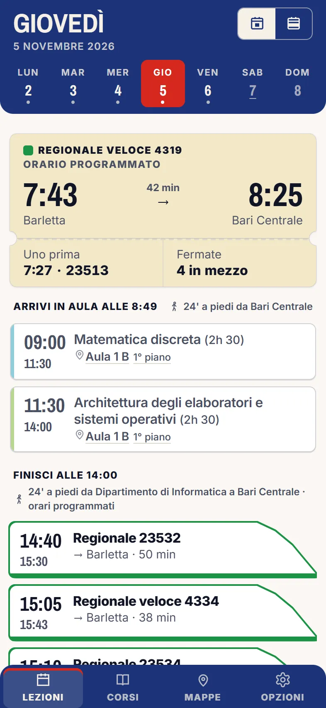

Cosa fa Sciamn
Cosa fa oggi e cosa ancora no. Prende l'orario pubblico degli atenei ed è un'app non ufficiale.
La giornata e il treno
Apri l'app e trovi le lezioni di oggi con ora, aula e piano. La lezione in corso mostra quanto manca alla fine, quella che sta per iniziare dice tra quanti minuti.
Se scegli la stazione da cui parti (Opzioni › Viaggi), sopra le lezioni c'è il biglietto del treno per arrivare in tempo, con i minuti a piedi fino all'aula; sotto, i treni per tornare. Il treno proposto lo puoi cambiare: solo per oggi, per le lezioni di quell'ora o per tutti i giorni.
- Orari di Trenitalia, Ferrotramviaria, Ferrovie Appulo Lucane e Ferrovie del Gargano, scaricati una volta: funzionano anche senza rete.
- Per Ferrotramviaria e Ferrovie Appulo Lucane il ritardo in tempo reale, anche se il treno è soppresso.
- Se c'è uno sciopero che tocca i tuoi treni, una riga sopra il biglietto te lo dice.
- Tra una lezione e l'altra vedi quanto dura la pausa e, se cambia edificio, quanti minuti servono a piedi.
- Le lezioni annullate o sospese sono segnate come tali; per quelle online c'è il link per entrare.

La settimana
Un interruttore in alto passa da Giorno a Settimana. Ogni corso ha il suo colore, che scegli tu da una mazzetta.
Puoi filtrare per anno di corso, per iniziale del cognome (per i corsi divisi A-K / L-Z) e per indirizzo, e tenere solo i corsi che segui davvero. Ogni corso ha la sua scheda, con le note che scrivi tu.
Per aggiornare l'orario trascini la lista verso il basso.

Trovare l'aula
Tocchi l'aula di una lezione e si apre la pianta del piano con l'aula evidenziata. Se due lezioni sono in edifici diversi, l'app conta i minuti a piedi tra l'uno e l'altro.
Per ora le piante ci sono solo per due edifici del Campus Quagliariello: il Dipartimento di Informatica e il Palazzo delle Aule. Per gli altri l'app mostra il nome e l'aula, ma non la pianta.

Il tuo corso
Il corso si cerca per nome, anche con un errore di battitura. Ci sono i corsi dell'Università di Bari che pubblicano l'orario online e quelli del Politecnico di Bari.
- Filtri
- Per tipo (triennale, magistrale, ciclo unico) e per dipartimento. Per UniBA c'è anche il link alla pagina del corso.
- Tutto il corso o un anno
- Scegli l'intero corso oppure solo il tuo anno.
- Più calendari insieme
- Fino a 3, per esempio per gli insegnamenti comuni del primo anno al Politecnico.
- Il tuo corso non c'è?
- Incolla il link del suo calendario, oppure segnalalo dall'app.
Gli avvisi e il resto
- Promemoria
- Una notifica prima di ogni lezione, con i minuti che scegli tu, e il riepilogo del mattino: quante lezioni hai e dove è la prima. Su alcuni telefoni, come Xiaomi, serve togliere le restrizioni di batteria all'app.
- Silenzioso a lezione
- Il telefono va in «Non disturbare» quando inizia la lezione e torna normale alla fine. Cosa lasciar passare lo decidi tu. Le pause brevi restano in silenzio, le lezioni solo online non contano, e un Non disturbare acceso da te non viene mai spento. Serve il tuo permesso.
- Calendario del telefono
- Le lezioni che vedi con i tuoi filtri possono finire nel calendario del telefono, senza doppioni. Lo fa da sola a ogni scaricamento, oppure a mano quando vuoi. Le annullate non entrano.
- Si aggiorna da sola
- Le novità arrivano senza scaricare di nuovo l'app. Se una versione cambia qualcosa che tocca il telefono più a fondo, la reinstalli da questo sito.
- Segnalazioni
- Dalla prima riga delle Opzioni scrivi un problema, un corso che manca o un'idea. La legge chi ha fatto l'app.
- Chiaro o scuro
- Segue il telefono, oppure scegli tu.
Cosa non fa ancora
- La ricerca delle aule. La scheda Mappe è ancora vuota.
- Altre piante. Solo due edifici hanno la pianta.
- Il ritardo di tutti i treni. In tempo reale ci sono solo Ferrotramviaria e Ferrovie Appulo Lucane; per gli altri vedi l'orario programmato.
- iPhone. Per ora c'è solo la versione per Android.
Quando una di queste cose arriva, la trovi scritta nelle Novità.
Provala
Versione 1.4.0, 6,3 MB, per Android 8 o successivo; su iPhone non c'è ancora.